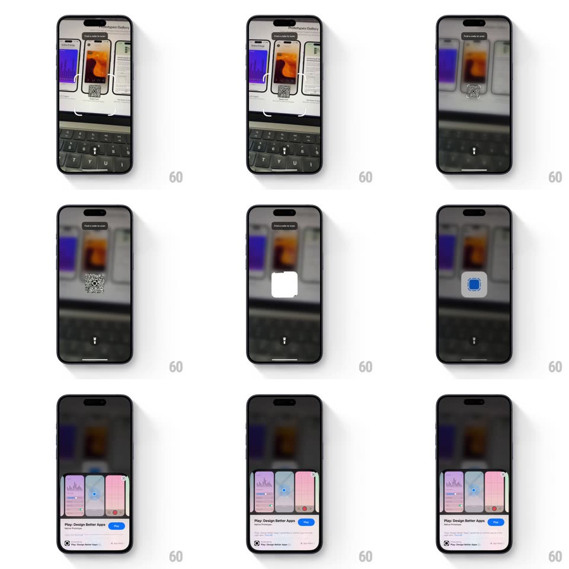

Media
Frame-by-frame

Rebuild this interaction 1:1: the iOS App Clip scan flow - the camera viewfinder detects a QR code, a scan badge blooms in the center, and an App Clip card slides up from the bottom showing the app ("Play: Design Better Apps") with an Open button.

Rebuild this interaction 1:1: the iOS App Clip scan flow - the camera viewfinder detects a QR code, a scan badge blooms in the center, and an App Clip card slides up from the bottom showing the app ("Play: Design Better Apps") with an Open button.
## Integration
Integration: stack-agnostic spec - springs given as stiffness/damping, timed motions as duration + curve; map every value to your framework and animation library of choice.
## Scene
Camera scanner UI: live viewfinder (dimmed), "Find a code to scan" pill at top, flash toggle at bottom center. After detection: a white rounded badge with a blue glyph, then the App Clip sheet - a horizontal mini screenshot carousel, app name, subtitle, and a blue Open button.
## Motion spec
Pattern: scan-detect bloom into bottom sheet.
- The viewfinder darkens slightly when scanning starts (200ms); the QR region stays lit.
- On detection: the white scan badge pops in at the code's position (scale 0.3 -> 1.1 -> 1, spring ~360/20, 350ms) with the blue glyph fading in inside it.
- ~400ms later the badge anchors upward as the App Clip sheet rises from the bottom (spring ~380/26, 400ms), pushing the viewfinder back and dimming it.
- Sheet content staggers in: carousel first, then name + subtitle, then the Open button (each 80ms apart, 20px rise, 250ms).
## Calibration
- The sheet is a partial-height card, not full screen - the dimmed viewfinder stays visible above it.
- The badge-to-sheet handoff reads as one continuous event - no pause between them beyond ~400ms.
## Reduced motion
Badge and sheet fade in (200ms) at their final positions.
## Don't miss
- The carousel inside the sheet is scrollable mini-app previews with colored cards.
- The Open button is a compact pill, not a full-width bar.